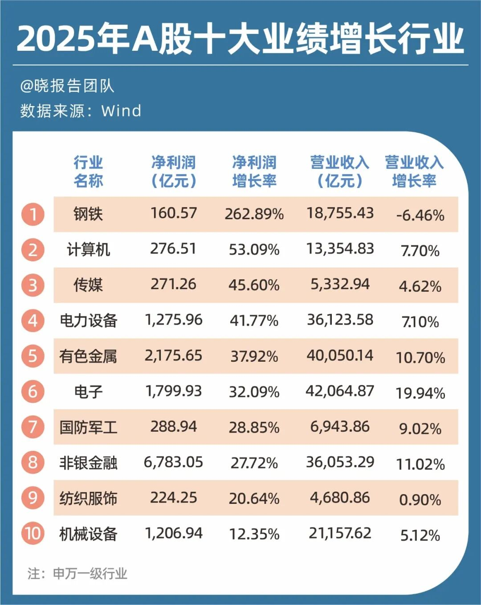
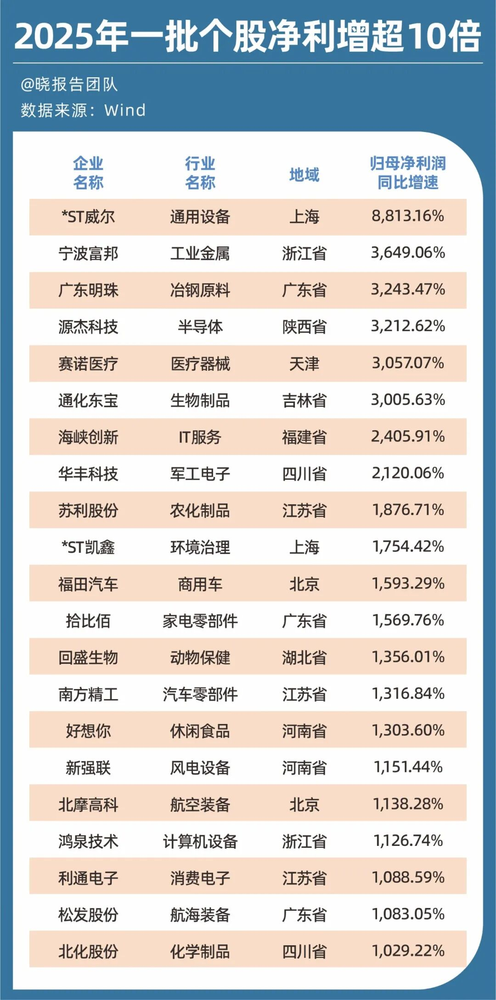
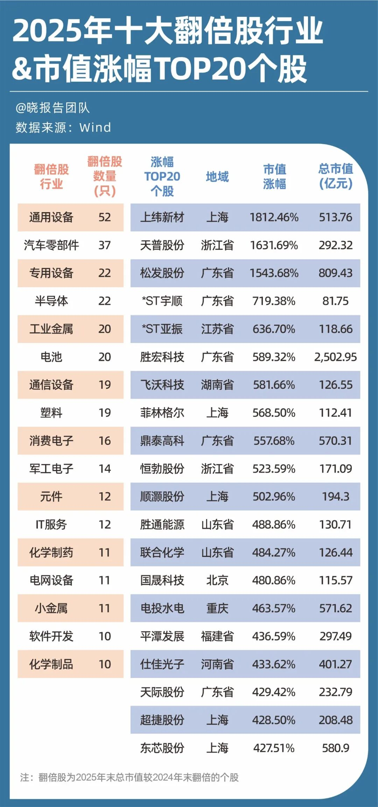
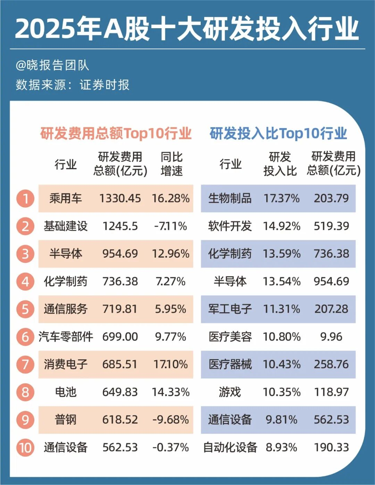
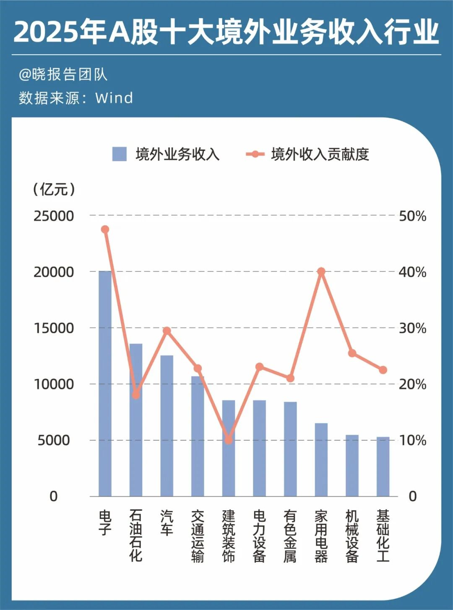
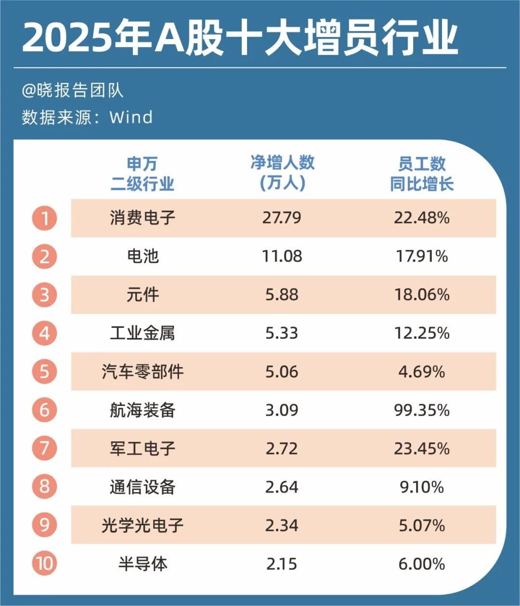
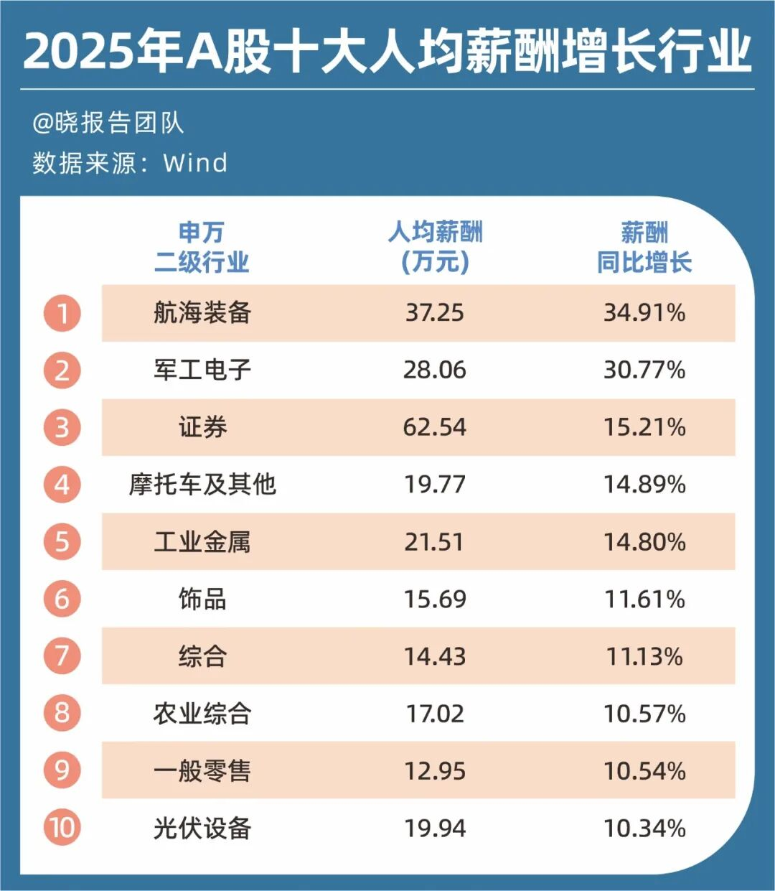
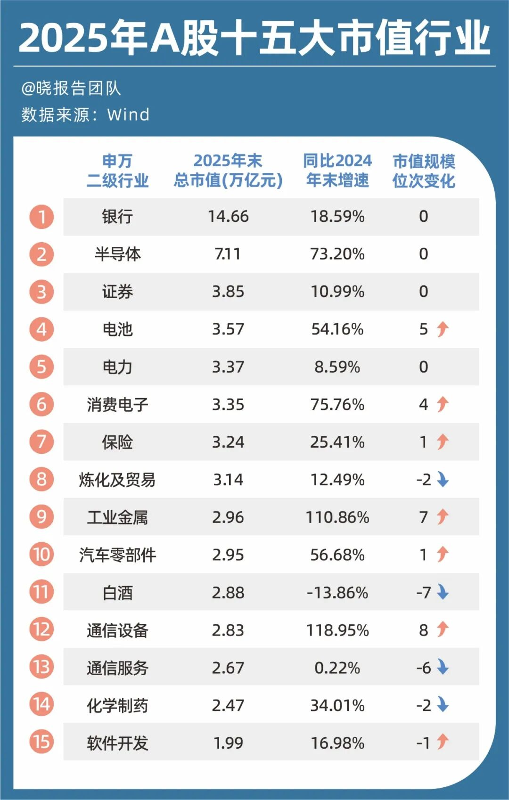
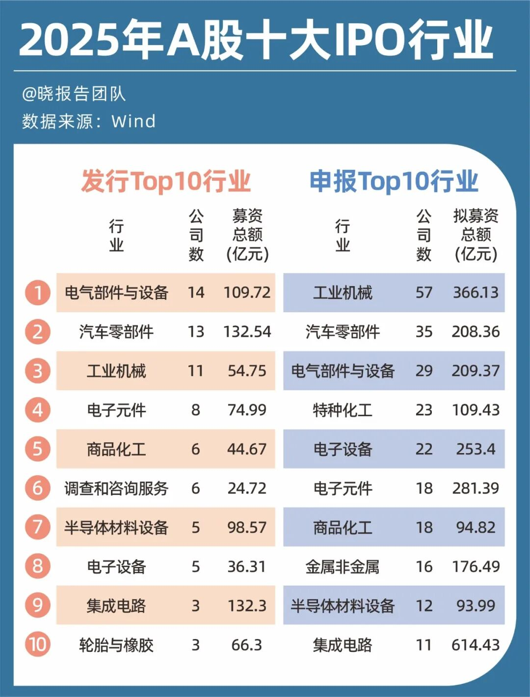

📈 5512份财报，给A股投资拉了条主线
5,512 financial reports reveal the main investment theme for A-shares

文 /巴九灵（微信公众号：吴晓波频道）
一份经济大考卷，结果consequence[ˈkɑnsəkwəns] n. 结果,后果,影响落定。
截至2026年4月30日，A股上市公司2025年年报、2026年一季报法定披露期正式结束conclude[kənˈklud] v. 结束,终止；断定,下结论，5500多家公司交出“成绩单”。
据同花顺iFinD数据，共有5506家A股公司同时披露了两份财报，其中一大批flood[fləd] n. 洪水；泛滥；一大批公司实现了年报与一季报净利润同比双增。
尤其是半导体、化工、计算机interface[ˈɪnərˌfeɪs] v. （使通过界面或接口）接合，连接；[计算机]使联系、通信、消费电子、国防军工、电力、医药生物等热门板块，批量个股交出“双增”成绩单。
中信证券指出，今年以来，中东地缘冲突持续和局势反复，使得投资者避险情绪蔓延，全球风险资产asset[ˈæˌsɛt] n. 资产， 财产；优点； 有用的东西表现偏弱。在这样的背景下，上市公司的业绩表现愈发重要，业绩出现改善或超预期的prospective[prəˈspɛktɪv] adj. 预期的行业和个股可能成为投资者关注的主线。
因此，我们从营收、净利润、市值、员工数量、人均薪酬、研发投入、海外abroad[əˈbrɔd] n. 海外；异国收入等维度，对A股5512家上市公司的2025年度财报进行了盘点，其中提炼出几个值得留意的信号：
◎ 业绩大幅上涨的企业，集中出现在半导体semiconductor[ˌsɛmɪkənˈdəktər] n. 半导体、医疗器械、生物制药、军工电子等新兴赛道。
◎ 通用设备、汽车auto[ˈɔtoʊ] n. 汽车（等于automobile）；自动零部件、半导体和专用设备四大领域，在563只翻倍股中占比23.6%。
◎ 境外收入总额接近approximate[əˈprɑksəˌmeɪt] v. (to)接近12.4万亿元，境外收入贡献度接近17%，两者均创下历史新高。
◎ 各行业雇员总数gross[groʊs] n. 总额，总数3144.02万人，同比增长1.72%；人均薪酬约23.83万元，同比增长2.68%。
或许，从以日为单位的交易bargain[ˈbɑrgɪn] n. 廉价货；交易,契约,合同频次来看，略有些过时，但从长期投资的维度，企业的增长从来不是孤立事件，它既回应了过去，也指向了未来。


业绩，是股票投资invest[ɪnˈvest] v. 投资；覆盖；耗费；授予；包围和交易中的最底层逻辑。
整体来看，2025年A股上市公司的答卷还算不错——营收和净利润实现accomplish[əˈkɑmplɪʃ] v. 完成；实现；达到“双增”。Wind数据显示exhibit[ɪgˈzɪbɪt] v. 展览；显示；提出（证据等），全市场企业合计实现营收72.85万亿元，同比增长2.57%；归母净利润5.39万亿元，同比增长2.36%。
具体来看，曾经一度被市场遗忘的钢铁行业，2025年净利润同比暴增了262.89%，堪称“咸鱼翻身”。行业的反弹，和其下游需求复苏、行业去产能效果显现emerge[ˈimərʤ] v. 显现,浮现；暴露、出口创新高等因素相关。
其次，是计算机、传媒、电子amplifier[ˈæmpləˌfaɪər] n. [电子] 放大器，扩大器；扩音器行业，净利润分别同比增长53.09%、45.60%、32.09%，这些都是明显受益于人工智能的发展。意味着spell[spɛl] v. 拼，拼写；意味着；招致；拼成；迷住；轮值AI从题材炒作全面进入业绩兑现期，且这一趋势有望延续至今年。
长城基金高级宏观策略研究员汪立认为，以光模块、AI芯片、服务器为代表的算力基础设施infrastructure[ˈɪnfrəstrʌktʃə] n. 基础设施；公共建设；下部构造，正持续受益于全球资本支出增长与技术迭代升级，市场需求保持旺盛。

和AI基建有关的，还有电力设备bite[baɪt] n. 咬；一口；咬伤；刺痛 abbr. 机内测试设备（Built-In Test Equipment）行业，2025年行业净利润同比增长41.77%。叠加新能源并网加速accelerate[ækˈsɛlərˌeɪt] v. 使加速，使增速，促进；加速、老旧电网改造等因素，行业正处于长景气周期。
此外，国防军工行业也表现behave[bɪˈheɪv] v. 表现；（机器等）运转；举止端正；（事物）起某种作用抢眼，净利润同比增长28.85%，营收同比增长9.02%。低空经济、商业航天aerospace[ˈeərəʊspeɪs] n. 航天这些概念虽然看似与普通人关系不大，但企业的订单已经实实在在地撑起了业绩。
结合最新的2026年一季度财报数据，除了上述业绩表现突出distinguish[dɪˈstɪŋgwɪʃ] v. 区分；辨别；使杰出，使表现突出的行业，创新药、新能源上游如锂电相关、资源品如铝、铜、黄金等行业也值得关注，不少企业一季度出现业绩爆发。
从个股表现来看，2025年共计3231家上市公司establishment[ɪˈstæblɪʃmənt] n. 确立，制定；公司；设施营收同比增长，占比接近六成，81家企业营收涨幅超过100%；2954家企业归母净利润同比增长，占比约54%，675家企业归母净利润翻倍，21家企业归母净利润同比增长超过exceed[ɪkˈsid] v. 超过,胜过；越出 (限制、规定)1000%。
这21家净利润大幅上涨pyramid[ˈpɪrəmɪd] v. 渐增；上涨；成金字塔状的企业，普遍是受益于低基数效应、行业复苏或业务转型。从行业上看，以半导体、医疗器械、生物制药、军工电子等为代表的新兴赛道表现突出shine[ʃaɪn] v. 发出光；反射光，闪耀；出类拔萃，表现突出；露出；照耀；显露；出众。


行业成长逻辑的logic[ˈlɑʤɪk] adj. 逻辑的演绎，不仅体现在当期业绩上，更体现在资本市场给予的估值溢价上。
根据seed[sid] n. 种子；根据；精液；萌芽；子孙；原由Wind统计，2025年A股一共跑出563只翻倍股。其中，通用设备fixture[ˈfɪksʧər] n. 设备；固定装置；固定于某处不大可能移动之物行业数量最多，52只；其次是汽车automobile[ˌɔtəmoʊˈbil] n. 汽车零部件行业，37只；专用设备行业和半导体conductor[kənˈdəktər] n. 指挥；售票员；导体行业，各22只。
从涨幅TOP20企业榜单来看，这些翻倍股的增长逻辑主要分为两类。第一类是靠并购、重组、实控人变化和题材催化等方式alike[əˈlaɪk] adv. 以同样的方式；类似于，扩大了故事想象空间，上纬新材、天普股份就属于这类。
第二类是贴合人工智能、国产替代等市场“最强音”，以电子、计算calculate[ˈkælkjəˌleɪt] v. 计算,推算；预测，估计机、机械设备、电力设备、基础化工等硬科技与高端制造领域为典型，一些企业实现业绩与估值的“戴维斯双击”。

此外，从地域分布来看，市值涨幅前20的企业高度集中于fasten[ˈfæsən] v. 使固定；集中于；扎牢；强加于广东省（5家）、上海市（5家）、浙江省（2家），三地合计占据了12席，形成了鲜明的“地域集群”效应。

今天的大国竞争compete[kəmˈpiːt] v. 竞争；争夺，竞争，本质上与一个指标挂钩：谁为未来投入更多。
经合组织apparatus[ˌæpərˈætəs] n. 器械，器具，仪器；机构，组织2026年最新数据显示，中国的研发总投入首次超过美国，跃居世界第一。
放到A股身上，这件事更具体。2025年，A股上市公司研发投入input[ˈɪnˌpʊt] n. 投入；输入电路达1.91万亿元，同比增长4.3%，其中科创板研发投入强度最大，达11.04%。
从总量看，钱主要投向体量大、竞争contend[kənˈtɛnd] v. 竞争；奋斗；斗争；争论激烈、技术迭代快的行业。如乘用车全年研发投入1330.45亿元，基础建设1245.50亿元，半导体954.69亿元，化学chemistry[ˈkɛmɪstri] n. 化学；化学过程制药736.38亿元。

结合bind[baɪnd] v. 结合；装订；有约束力；过紧个股来看，在25家研发投入超过百亿元的企业中，比亚迪以634.41亿元的研发投入问鼎榜首；另有16家企业都是国有控股企业，如中国建筑、中国移动、中国交建等“中字头”企业研发投入分别达到attain[əˈteɪn] v. 完成；获得；达到440.09亿元、374.48亿元、250.28亿元。
不过，从研发强度来看，生物breed[brid] n. [生物] 品种；种类，类型医药、人工智能、新能源这些硬科技领域，构筑了研发创新高地。如生物制品研发投入比达到17.37%，软件开发达14.92%，化学compound[ˈkɑmpaʊnd] n. [化学] 化合物；混合物；复合词制药和半导体分别达到13.59%和13.54%。
研发投入未必会在当年换来业绩大幅上涨的表现，但其会慢慢沉淀成产品代际、工艺能力capability[ˌkeɪpəˈbɪləti] n. 能力和行业卡位。中航证券首席经济学economics[ˌɛkəˈnɑmɪks] n. 经济学家董忠云表示，科技创新是产业升级的前提，产业升级是科技创新价值兑现的载体，二者深度融合，共同构成A股业绩韧性的核心支撑。
越来越多的中国企业正在把生意做到全世界，这既是能力的体现embodied[ɪmˈbɒdid] adj. 体现，也是增长空间的重要来源。
统计结果consequently[ˈkɑnsəkˌwɛntli] adv. 结果，因此，所以显示，2025年A股上市公司境外收入总额接近12.4万亿元，为首次突破12万亿元；境外收入占总营收比重，也就是namely[ˈneɪmli] adv. 即,也就是境外收入贡献度接近17%，两者均创下历史新高。
在公开境外收入的3844家公司中，约4成企业境外业务收入占比不足defect[ˈdifɛkt] n. 过失;缺点;不足10%，出海对它们而言仍只是补充；27%的企业境外业务贡献度在10%–30%，已建立constitute[ˈkɑnstəˌtut] v. 组成，构成；建立；任命一定海外市场，但仍以内销为主；20%的企业境外业务贡献contribute[kənˈtrɪbjut] v. 贡献，出力；投稿；捐献度在30%—60%，逐步形成较稳固的海外市场；而真正超过excel[ɪkˈsɛl] v. 超过；擅长60%、实现深度国际化的企业仅占11%。
拆分到细分行业来看，电子chip[ʧɪp] n. [电子] 芯片；筹码；碎片；(食物的) 小片; 薄片、石油石化、汽车及交通运输行业的境外业务收入超过1万亿元；而电子component[kəmˈpoʊnənt] n. 成分；组件；[电子] 元件、家用电器、汽车、机械设备四大行业的境外收入贡献度均超25%。这些行业共同构成企业出海的成长动能。

比如算力成为不少企业营收增量的重要来源，以辗制环形锻件和风电轴承起家的恒润股份，算力相关产品及服务收入占比达42.11%，新业务已反超部分传统业务；原本做城市照明的罗曼股份，AI算力computing[ˈkɒmpjuːtɪŋ] n. 算力板块收入占比达46.12%，已成为第一大业务板块，诸如此类的还有弘信电子、奥瑞德、艾布鲁等企业。
此外farther[ˈfɑrðər] adv. 更远地；此外；更进一步地，从个股表现来看，22家公司2025年境外收入超过千亿元，前5名依次是中国石油、工业富联、比亚迪、立讯精密、紫金矿业。
在2025年境外收入50强公司中，有多家公司2025年境外业务收入同比增幅超过50%，包括comprise[kəmˈpraɪz] v. 包含，包括，由...组成；构成，组成厦门象屿、华勤技术、工业富联、紫金矿业等。
总的来说，中国企业出海从“产品出海”转向“品牌出海”后，如今正在迈向“能力出海”的新阶段，包括算力、供应链管理administer[ədˈmɪnɪstər] v. 管理；执行；给予、工程能力等。
十大增员/人均薪酬行业
人和薪酬，往往比业绩更早传递transmission[trænzˈmɪʃn] n. 传动装置，[机] 变速器；传递；传送；播送出行业冷暖的信号。
我们统计了5512家披露了相关数据的A股企业，这些企业2025年雇员总数sum[səm] n. 总数， 和；金额；算术题是3144.02万人，同比增长1.72%；行业加权口径下的人athlete[ˈæθˌlit] n. 运动员，体育家；身强力壮的人均薪酬约23.83万元，同比增长2.68%。
从行业分布来看，消费consume[kənˈsum] v. 消耗；消费；吃；喝电子、电池和元件成为过去一年中增员最多的三个板块，分别净增27.79万、11.08万和5.88万人。从扩招幅度breadth[brɛdθ] n. 宽度，幅度；宽宏来看，航海装备、军工电子和消费电子的员工增幅明显领先，分别达到99.35%、23.45%和22.48%。

而航海装备和军工电子disc[dɪsk] n. 圆盘，[电子] 唱片（等于disk），亦是人均薪酬增长最快的行业。前者2025年人均薪酬同比增长34.91升至37.25万元；后者达28.06万元，同比增长30.77%。
如果说去年的增员主力是“大企业并购+海量制造”的双轮驱动activate[ˈæktəˌveɪt] v. 启动，激活；驱动，驱使；使开始起作用，今年的主线则悄然切换为“出海落地+硬科技产能扩张”。
这两年中国造船“横扫”全球订单，航海装备行业的新增用工，就多集中concentrate[ˈkɑnsənˌtreɪt] v. 集中；浓缩；全神贯注；聚集在总装、配套和海工装备环节。军工电子行业抢的则是雷达、航电、通信correspond[ˌkɔrəˈspɑnd] vi. 通信；符合， 一致；相当于， 对应、惯导这类随着国防信息化建设提速而紧缺的工程师和高技能人才。

如果说业绩反映的是企业过去一年的成绩，市值反映的则是其未来十年的成长预期expectation[ˌekspekˈteɪʃn] n. 预期；期望,指望。
根据Wind数据统计结果harvest[ˈhɑrvəst] n. 收获；产量；结果，2025年末A股前500家公司的平均市值约1513.24亿元，比2024年多292.27亿元；市值超过overhaul[ˈoʊvərˌhɔl] vt. 彻底检修；赶上， 超过1000亿元的公司有176家，比上年多43家；市值破万亿元的公司有12家，比上年多4家。
按行业分布来看，前十大市值行业主要分布在金融、半导体、新能源、AI相关赛道，构成了当下中国经济发展evolution[ˌɛvəˈluʃən] n. 进化,演变；发展,进展的支柱。
按个股分布来看，TOP50市值公司榜单里，科技型企业的数量比十年前翻了一番，高技术制造业manufacture[ˌmænjʊˈfæktʃə] n. 制造,制造业的营收和利润增速分别达到11%和20%，明显比整体水平要快。

而IPO结构的变化，更是验证了聚焦硬科技的发展趋势drift[drɪft] n. 漂流，漂移；趋势；漂流物。根据公开的outward[ˈaʊtwərd] adj. 向外的；外面的；公开的；外服的；肉体的IPO发行资料，2025年A股新上市企业有116家，其中创业板33家、北交所26家、上证主板23家、科创板19家、深证主板15家。
从行业分布来看，新上市企业集中concentration[ˌkɑnsənˈtreɪʃən] n. 浓度；集中；浓缩；专心；集合在电气部件与设备、汽车零部件、工业机械、电子元件等领域。在截至2026年5月1日，在审和申报declaration[ˌdɛklərˈeɪʃən] n. （纳税品等的）申报；宣布；公告；申诉书的417家企业，也多来自于这些行业。

最后，数据会更新，排名会变化，但真正留下来的，往往不是一时的增速，而是那些在不确定ascertain[ˌæsərˈteɪn] v. 确定，查明，弄清里做出的选择。
这份“成绩单”更像是观察产业方向和企业能力变化的坐标coordinate[koʊˈɔrdəˌneɪt] n. 坐标；同等的人或物，祝愿你在2026年，少一些被情绪裹挟，多一些对趋势的把握。

数据
聚焦未来十年的财富fortune[ˈfɔrʧən] n. 财富；命运；运气流向和跃迁